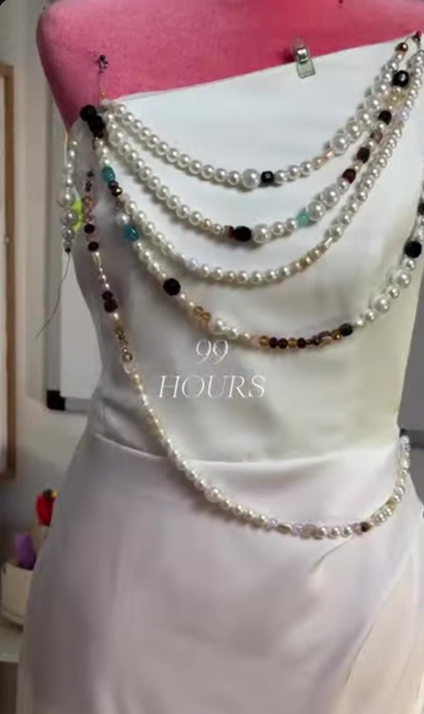
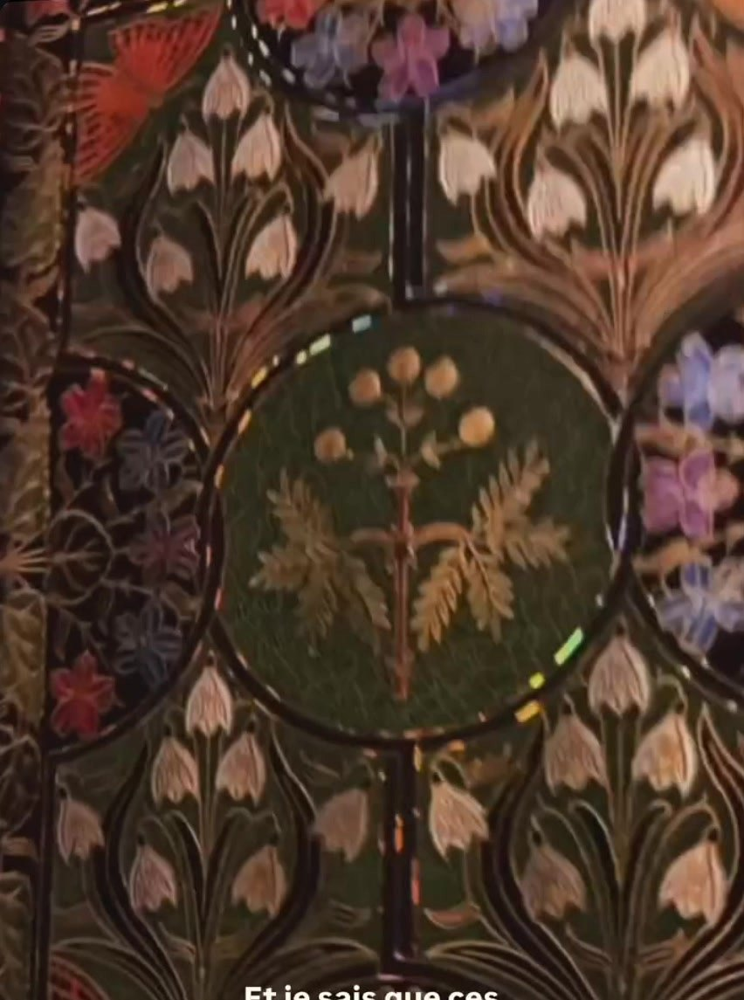
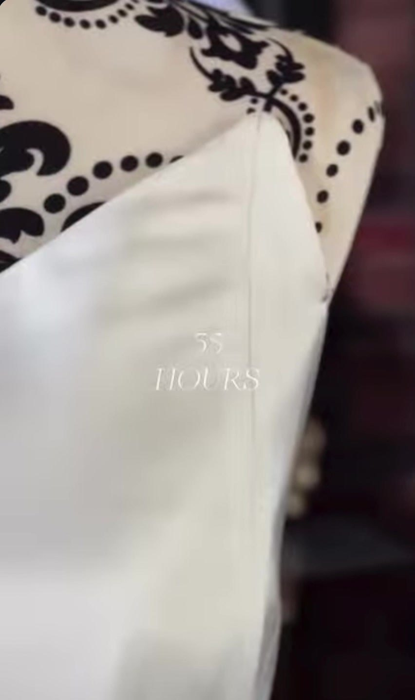
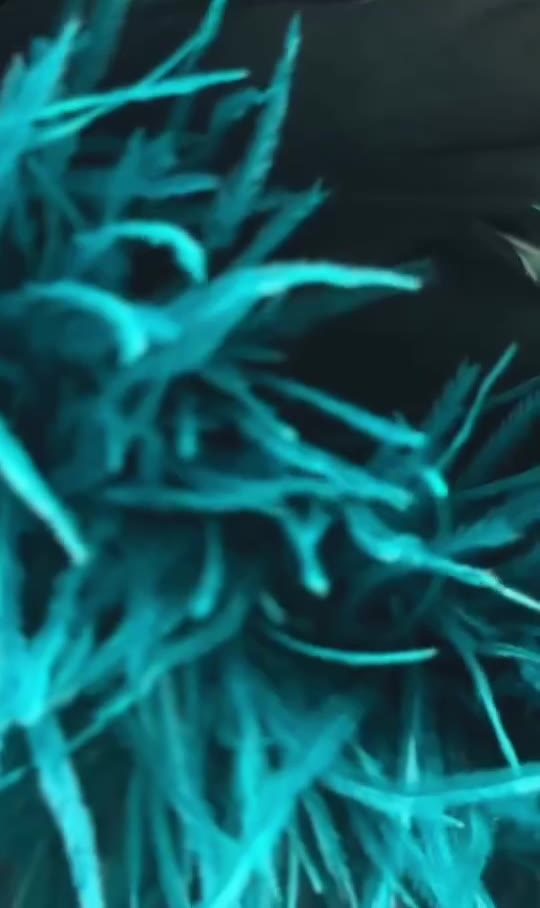
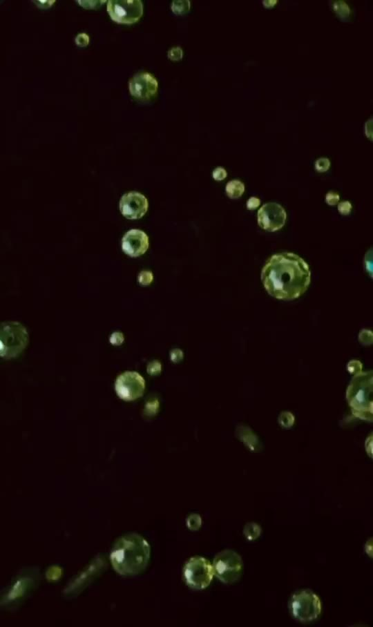
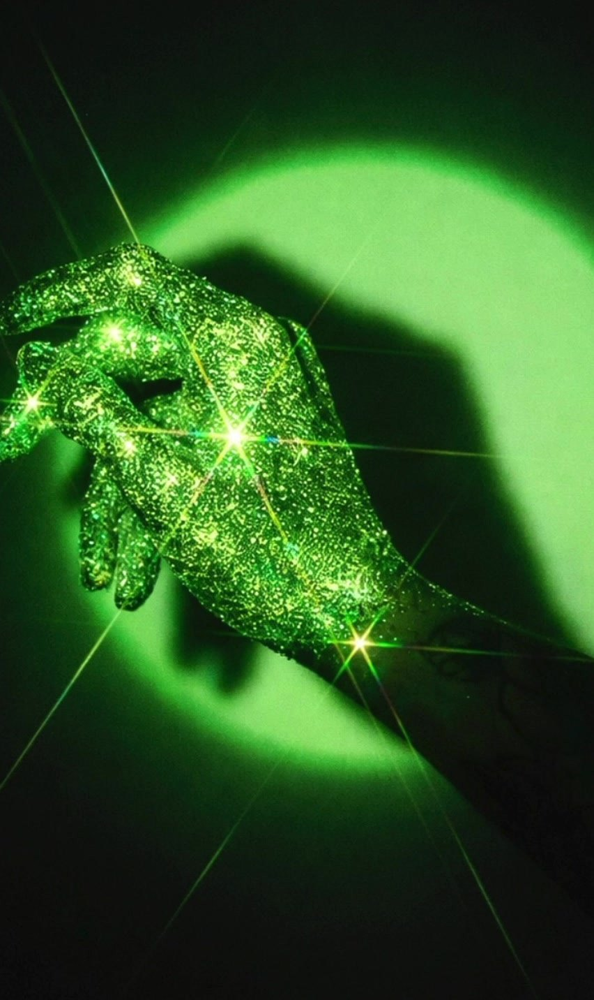
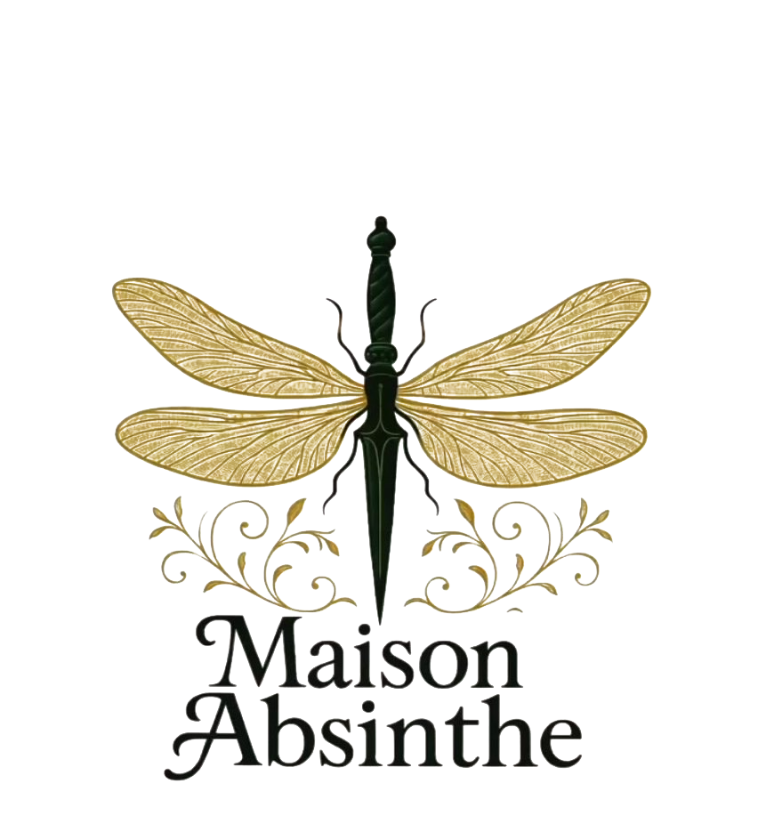

Ornella
Dans les coulisses de Maison Absinthe, Ornella prend vie.
Made to be seen
Maison de couture
Paris · Made in France
Le premier rêve
Chaque rêve peut être beau, mais attention, il cache parfois un poison qui nous attire vers l’abîme.
Mary Grace
Les heures
0heures
Creating couture pieces takes time.
Tracer, couper, assembler. La pièce commence à plat, sur la table de coupe.
Le drapé prend sa forme sur le corps. On ajuste, on épingle, on recommence.
Chaque rang est posé à la main, perle après perle, jusqu’au bustier.

Il ne reste plus qu’à la porter. Faite pour être vue.
La matière


Les créations
Dans les coulisses de Maison Absinthe, Ornella prend vie.
Plumes turquoise, mouvement et lumière.

Un rêve vert, et le poison qui attire vers l’abîme.

Ceci n’est qu’un signe. L’histoire commence bientôt.


La libellule
Chez Maison Absinthe, chaque création commence par une idée. Jusqu’à ce que notre libellule signature et le nom Maison Absinthe prennent vie ensemble.
On efface, puis on recommence.
L’atelier
Paris, France · Pièces uniques sur rendez vous